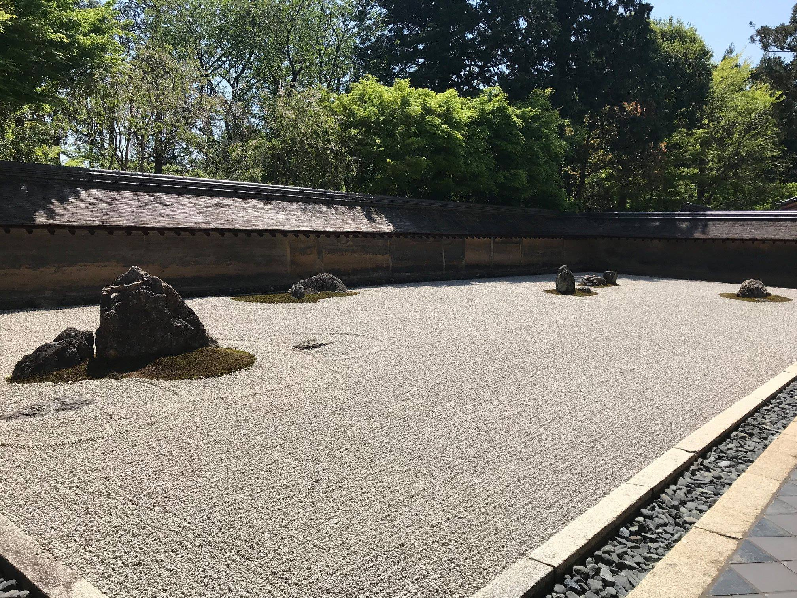

Cestování po Japonsku - fotostory z Kjóta
Zenové chrámy a gionské gejši v Kjótu byly můj hlavní cíl ve východní Asii. Několik momentek z města, které bylo více než tisíc let hlavním městem Japonska a kam jezdil meditovat i Steve Jobs.
Zenový chrám Kinkakudži je podobně jako mnoho dalších míst v Kyótu zapsán na seznam UNESCO. Obě patra jsou pokryta plátky čistého zlata.

Bambusový les.
Soukromá projížďka bambusovým lesem s rikšou.
V Japonsku jsme s 睿 slavili celkem čtvery narozeniny, moje i její podle českého i čínského kalendáře. Oba jsme už opustili koncept materiálních dárků, kdy se povinnost obdarovat jednoduše odbude koupí čehosi, a posunuli se směrem k darům jiného typu. A tak 睿 plnila dárek pro mne tak, že se stala na den mojí privátní gejšou. Oproti Japonkám je ale mnohem žlutejší, takže podobnost je jen částečná, alespoň že to kimono je pravé.
Češi nejsou jediní, kteří nosí ponožky v sandálech. Dále to jsou třeba gejši.
Brány torii u šintoistického chrámu Inari.
Je jich tu kolem 10 000 a darovali je do sbírky japonští obchodníci jako poděkování bohům za výnosné obchodování. Cesta pod nimi je dlouhá 4 km.
Všude kolem torií jsou vidět sochy bílé lišky, která je poslem božstva Inari.
Přání zapsaná na dřevěných destičkách ve tvaru lišky.
Zahrady u zenového chrámu Ginkaku-ji.
Zahrady v Ginkaku-ji podruhé. Tentokrát s čínskou geišou.
Snad každý z chrámů ma kolem sebe množství úžasných zahrad.
Kam si lehnout?
Chrám Ryoanji uvnitř. Místo, kam jezdil meditovat Steve Jobs.
Ryoanji je znám hlavně kvůli kamenné zahradě, je v ní 15 kamenů, které nejsou z žádného místa vidět všechny. Vědci se dodnes přou, co konkrétně chtěl umělec kameny znázornit. Podle mě nic. Každý den sem proudí tisíce lidí, kteří sedí a dívají se na kameny.

Chodí sem meditovat i slepí, kteří mají všechny informace v braillově písmu.
Jeden z chrámů v komlexu Ninna-ji.
Vstup do chrámu Kiyomizu-dera s čínskou gejšou.
Buddhistické chrám v komplexu Kiyomizu-dera.
Stezka filosofů s čínskou gejšou.
Více než turisty lze mimo víkendy potkávat spíše školní zájezdy. Tady se mnou pan učitel z dívčí školy dal do řeči. Kromě toho, že znal dobře anglicky, znal výborně Prahu a používal její české jméno, ne “Prague”.
Pětipatrová pagoda v komlexu Ninna-ji se školáky.

Svatyně Yasaka.
Jedna klišé fotka u buddhistických chrámů.
A ještě jedna poté, co se čínská gejša zbavila nepohodlného kimona.
Luxusní hůlky na trzích Nishiki.
Street food na trzích Nishiki.
Pokud uvidíte gejšu, nesahejte na ni.
A hele! Čtvrť Gion, kde když máte trochu štěstí, tak potkáte gejšu, které zde buď vystupují v divadle, nebo skutečně dělají společnost majetné klientele a člověk se k ní může dostat pouze na doporučení jiného klienta. Tahle dívka na fotce pravděpodobně pravá gejša není, občas tady narazíte na studentky, které si jen vzaly make-up a nechávají se fotit, i tak ale velké množství lidí potěšila, je to symbol Japonska a dnes už vzácnost. Mně se však podařilo možná zahlédnout pravou gejšu společnici pár desítek minut před tím. Procházel jsem se kousek od Gionu, když se přede mnou otevřely dveře a z domu vyšly dvě gejši, z nichž jedna nesla velkou tašku s kimony. Jakmile mě zahlédly s namířeným telefonem, daly si ruce před tvář a začaly utíkat k autu a pak zmizely neznámo kam.